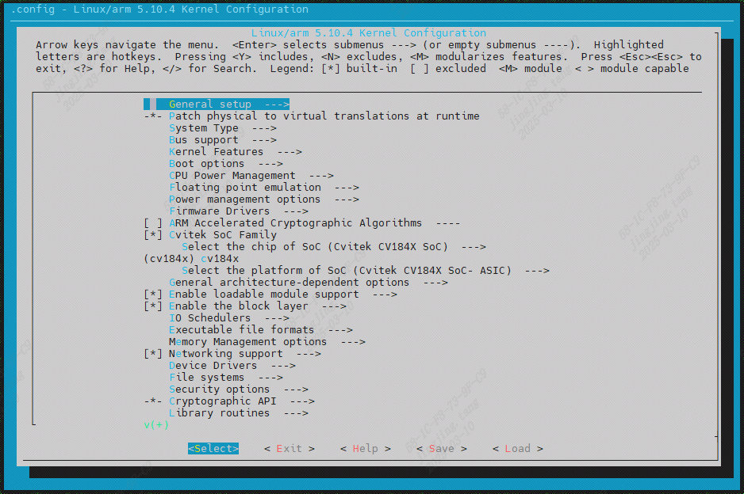

4. LINUX内核¶
在sdk_source目录下可以找到内核的程序代码
sdk_source/linux_5.10 // cv184x ARM 64bit/32bit Processor
4.1. 配置内核DTS¶
如果要针对内核的模块增减修改，可以透过修改DTS(*1)的方式来完成，每张EVB会有dts档案来定义其device tree，以cv1842hp_wevb_0014a_spinor为例，其DTS档案定义在档案路径如下 :
$ cat build/boards/cv184x/cv1842hp_wevb_0014a_spinor/dts_arm/cv1842hp_wevb_0014a_spinor.dts
/dts-v1/;
#include "cv184x_base_arm.dtsi"
#include "cv184x_asic_bga.dtsi"
#include "cv184x_asic_spinor.dtsi"
#include "cv184x_default_memmap.dtsi"
/ {
sysdma_remap {
ch-remap = <CVI_I2S0_RX CVI_I2S2_TX CVI_I2S1_RX CVI_I2S1_TX
CVI_SPI_NOR_RX CVI_SPI_NOR_TX CVI_I2S2_RX CVI_I2S3_TX>;
};
};
上述*.dtsi(device tree source include files)为处理器默认值, 不建议直接更改， 若要修改默认值，建议使用 /delete-node/方式修改
注：u-boot 和 kernel 使用共享DTS*
4.2. 配置kernel configuration¶
如果要针对内核的组态修改，可以直接修改kernel 组态档案，以cv1842hp_wevb_0014a_spinor为例，其defconfig档案定义在档案路径如下
$ cat build/boards/cv184x/cv1842hp_wevb_0014a_spinor/linux/cvitek_cv1842hp_wevb_0014a_spinor_defconfig
CONFIG_KERNEL_XZ=y
# CONFIG_SWAP is not set
CONFIG_SYSVIPC=y
CONFIG_POSIX_MQUEUE=y
CONFIG_NO_HZ_IDLE=y
CONFIG_HIGH_RES_TIMERS=y
CONFIG_PREEMPT=y
CONFIG_LOG_BUF_SHIFT=15
CONFIG_BLK_DEV_INITRD=y
CONFIG_CC_OPTIMIZE_FOR_SIZE=y
有三种修改defconfig档案的方式，一种是直接修改其defconfig档案文件（不推荐），第二种是使用命令行setconfig_kernel命令，第三种是使用图形化菜单界面的方式（推荐）。
下面介绍一下后两种方式：
使用command line - setconfig_kernel 方式
$ setconfig_kernel SPI=y
$ setconfig_kernel SPI_MASTER=y
$ setconfig_kernel SPI_DESIGNWARE=y
使用 Graphic user interface line - menuconfig_kernel 方式

4.3. 单独编译kernel¶
编译kernel的操作如下：
$ source build/envsetup_soc.sh
$ defconfig cv1842hp_wevb_0014a_spinor
$ clean_kernel && build_kernel
[TARGET] cvi_board_memmap.h
[TARGET] cvi_board_memmap.conf
[TARGET] cvi_board_memmap.ld
[TARGET] kernel-build
......
INFO: Packing boot.spinor done!
取得boot.spinor
$ ls install/soc_cv1842hp_wevb_0014a_spinor/boot.spinor
install/soc_cv1842hp_wevb_0014a_spinor/boot.spinor